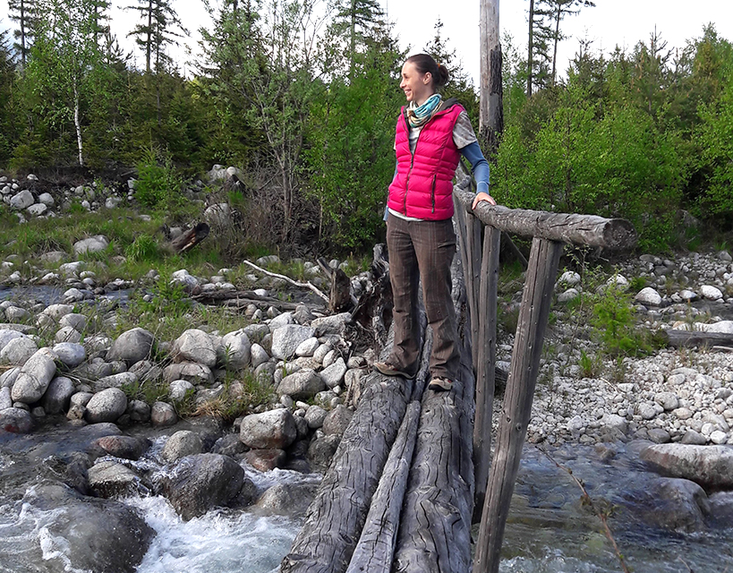

Som Slovenka žijúca momentálne v Prahe. Viac kreatívec a snílek, ale aby to nebolo príliš jednostranné, vyhľadávam aktivity, ktoré pomáhaju rozvoju praktickej stránky. Tak sa napríklad učím teraz kódovať. Myslím si, že človek by sa mal a mal mať možnosť učiť novým veciam celý život.
